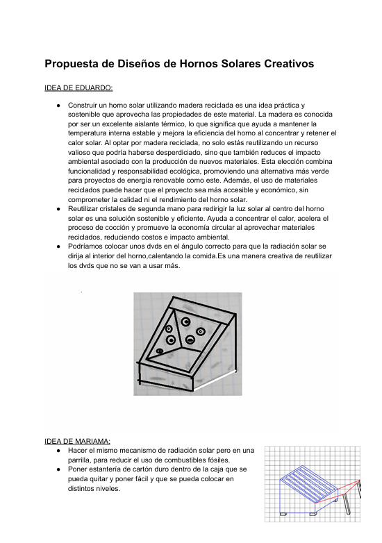
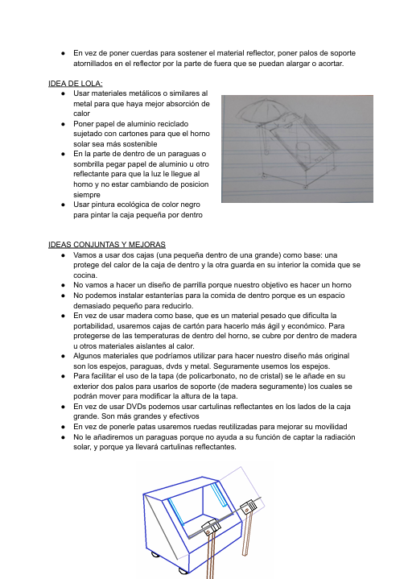

Tras haber investigado, empezamos a diseñar nuestro horno. Hicimos una tormenta de ideas en la que cada miembro escribía sus ideas para el diseño, teniendo en cuenta materiales adecuados, el tiempo que iba a requerir, y su forma pra que tenga un buen funcionamiento. Juntamos nuestras ideas, las retocamos, y conseguimos un diseño final de nuestro horno.
 